Diagrama de casos de uso
El diagrama principal de casos de uso es una herramienta que permite conocer de manera general las asociaciones con las gestiones, según Metaute (2016) un diagrama principal de casos de uso “contiene las gestiones a nivel general y la relación de asociación con los actores”(P-63).
.png)
Diagrama de casos de uso extendido
El diagrama de casos de uso extendido brinda especificidad a la hora de la comprensión de la especificación que se hace en el diagrama principal de casos de uso, Respecto a esto Metaute (2016) indica que los diagramas de caso de uso extendido “hacen alusión al diagrama principal de casos de uso, permitiendo ampliar cada uno de ellos, donde se puede visualizar las acciones que se pueden realizar con el manejo de los datos e información del sistema, donde es importante tener en cuenta que para manipular datos el usuario (actor), debe realizar una serie de acciones llamadas normalmente el CRUD”(P-64).
Diagrama de casos de uso
El siguiente diagrama de casos de uso amplía las acciones correspondientes a la necesidad nombrada como "Propietario", desglosando las actividades específicas que los actores pueden realizar para gestionar los datos de "Propietario" en el sistema, especificando si las operaciones fundamentales que se agrupan bajo el concepto CRUD y sus prerrequisitos de ejecución.
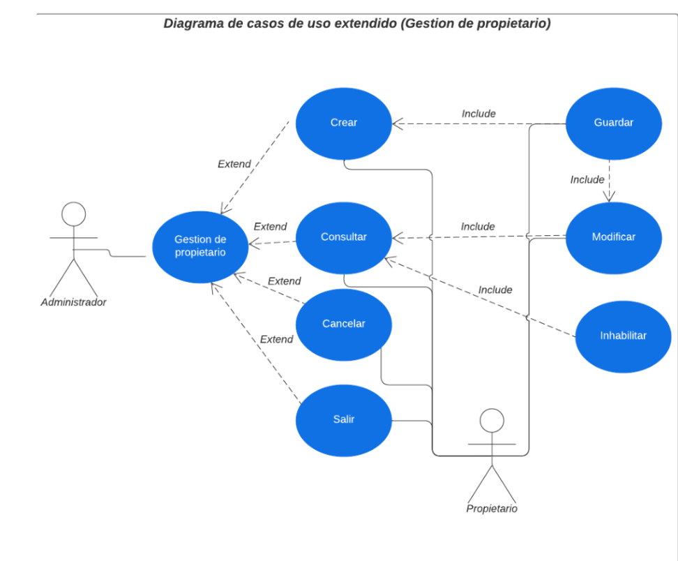
Diagrama de casos de uso para la gestión de residencia
El siguiente diagrama de casos de uso amplía las acciones correspondientes a la necesidad nombrada como "Residencia", desglosando las actividades específicas que los actores pueden realizar para gestionar los datos de "Residencia" en el sistema, especificando si las operaciones fundamentales que se agrupan bajo el concepto CRUD y sus prerrequisitos de ejecución.
Diagrama de casos de uso para la gestión de perro
El siguiente diagrama de casos de uso amplía las acciones correspondientes a la necesidad nombrada como " perro", desglosando las actividades específicas que los actores pueden realizar para gestionar los datos de " perro" en el sistema, especificando si las operaciones fundamentales que se agrupan bajo el concepto CRUD y sus prerrequisitos de ejecución.
Diagrama de casos de uso para la gestión de raza
El siguiente diagrama de casos de uso amplía las acciones correspondientes a la necesidad nombrada como "raza", desglosando las actividades específicas que los actores pueden realizar para gestionar los datos de "raza" en el sistema, especificando si las operaciones fundamentales que se agrupan bajo el concepto CRUD y sus prerrequisitos de ejecución.
Diagrama de casos de uso para la gestión de formulario
El siguiente diagrama de casos de uso amplía las acciones correspondientes a la necesidad nombrada como " formulario", desglosando las actividades específicas que los actores pueden realizar para gestionar los datos de " formulario" en el sistema, especificando si las operaciones fundamentales que se agrupan bajo el concepto CRUD y sus prerrequisitos de ejecución.
Diagrama de casos de uso para la gestión de encuesta
El siguiente diagrama de casos de uso amplía las acciones correspondientes a la necesidad nombrada como " encuesta", desglosando las actividades específicas que los actores pueden realizar para gestionar los datos de " encuesta" en el sistema, especificando si las operaciones fundamentales que se agrupan bajo el concepto CRUD y sus prerrequisitos de ejecución.
Diagrama de casos de uso para gestión de tipo de sensores
El siguiente diagrama de casos de uso amplía las acciones correspondientes a la necesidad nombrada como "tipo de sensores", desglosando las actividades específicas que los actores pueden realizar para gestionar los datos de "tipo de sensores" en el sistema, especificando si las operaciones fundamentales que se agrupan bajo el concepto CRUD y sus prerrequisitos de ejecución.
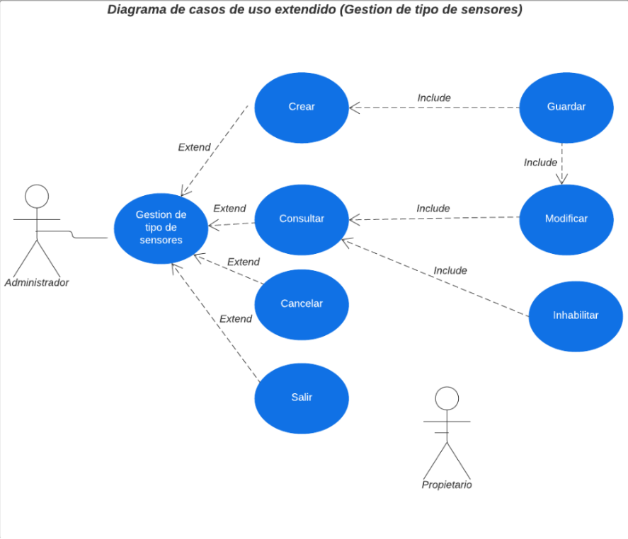
Diagrama de casos de uso para gestión de sensor térmico
El siguiente diagrama de casos de uso amplía las acciones correspondientes a la necesidad nombrada como "sensor térmico", desglosando las actividades específicas que los actores pueden realizar para gestionar los datos de "sensor térmico" en el sistema, especificando si las operaciones fundamentales que se agrupan bajo el concepto CRUD y sus prerrequisitos de ejecución.
Diagrama de casos de uso para gestión de sensor sonoro
El siguiente diagrama de casos de uso amplía las acciones correspondientes a la necesidad nombrada como "sensor sonoro", desglosando las actividades específicas que los actores pueden realizar para gestionar los datos de "sensor sonoro" en el sistema, especificando si las operaciones fundamentales que se agrupan bajo el concepto CRUD y sus prerrequisitos de ejecución.
Diagrama de casos de uso para gestión de sensor movimiento
El siguiente diagrama de casos de uso amplía las acciones correspondientes a la necesidad nombrada como "sensor movimiento", desglosando las actividades específicas que los actores pueden realizar para gestionar los datos de "sensor movimiento" en el sistema, especificando si las
Diagrama de casos de uso para gestión de resultado de sensores
El siguiente diagrama de casos de uso amplía las acciones correspondientes a la necesidad nombrada como "resultado de sensores", desglosando las actividades específicas que los actores pueden realizar para gestionar los datos de "resultado de sensores" en el sistema, especificando si las operaciones fundamentales que se agrupan bajo el concepto CRUD y sus prerrequisitos de ejecuc
Diagrama de gestión de tipo de adiestramiento
El siguiente diagrama de casos de uso amplía las acciones correspondientes a la necesidad nombrada como "tipo de adiestramiento", desglosando las actividades específicas que los actores pueden realizar para gestionar los datos de "tipo de adiestramiento" en el sistema, especificando si las operaciones fundamentales que se agrupan bajo el concepto CRUD y sus prerrequisitos de ejecución
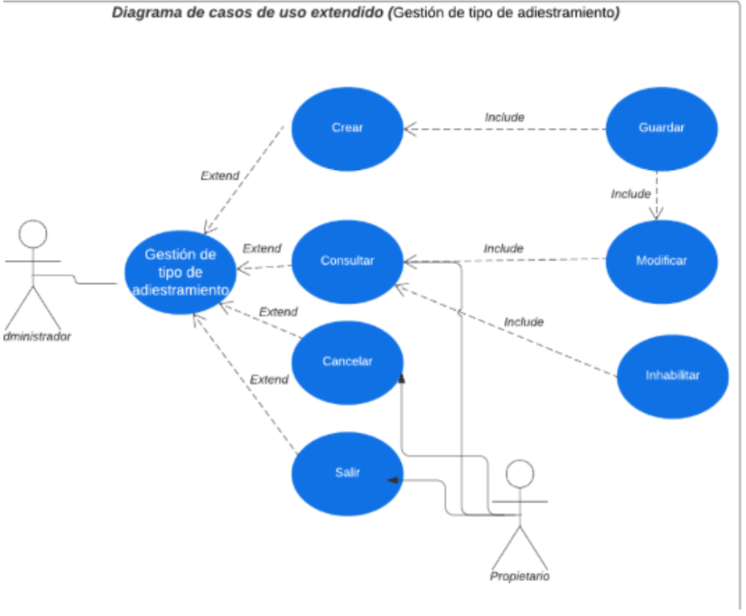
Diagrama de gestión de adiestramiento
El siguiente diagrama de casos de uso amplía las acciones correspondientes a la necesidad nombrada como "adiestramiento", desglosando las actividades específicas que los actores pueden realizar para gestionar los datos de "adiestramiento" en el sistema, especificando si las operaciones fundamentales que se agrupan bajo el concepto CRUD y sus prerrequisitos de ejecución.
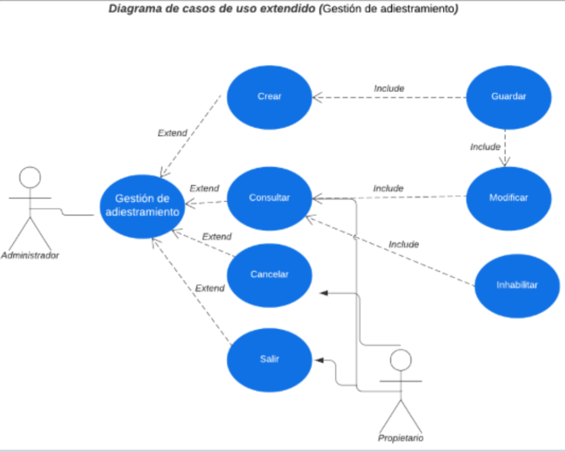
Diagrama de gestión de horario
El siguiente diagrama de casos de uso amplía las acciones correspondientes a la necesidad nombrada como "horario", desglosando las actividades específicas que los actores pueden realizar para gestionar los datos de "horario" en el sistema, especificando si las operaciones fundamentales que se agrupan bajo el concepto CRUD y sus prerrequisitos de ejecución.
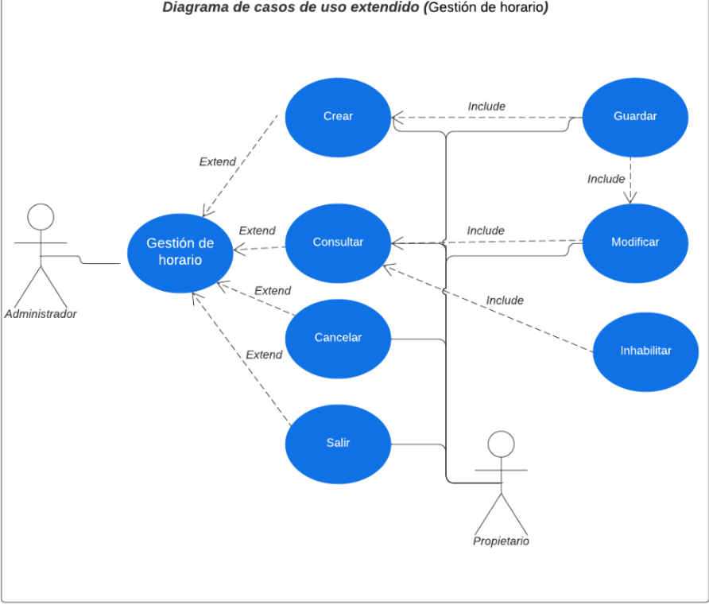
Diagrama de gestión de detección de emociones
El siguiente diagrama de casos de uso amplía las acciones correspondientes al proceso nombrado como "detección de emociones", desglosando las actividades específicas que los actores pueden realizar para gestionar los datos de "detección de emociones" en el sistema, especificando si las operaciones fundamentales que se agrupan bajo el concepto CRUD y sus prerrequisitos de ejecución
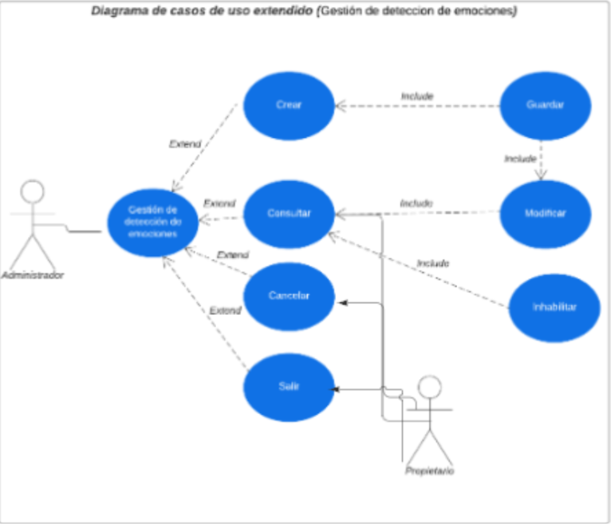
Diagrama de gestión de adiestramiento y solución de problemas de conducta
El siguiente diagrama de casos de uso amplía las acciones correspondientes al proceso nombrada como "adiestramiento y solución de problemas de conducta", desglosando las actividades específicas que los actores pueden realizar para gestionar los datos de "adiestramiento y solución de problemas de conducta" en el sistema, especificando si las operaciones fundamentales que se agrupan bajo el concepto CRUD y sus prerrequisitos de ejecución.
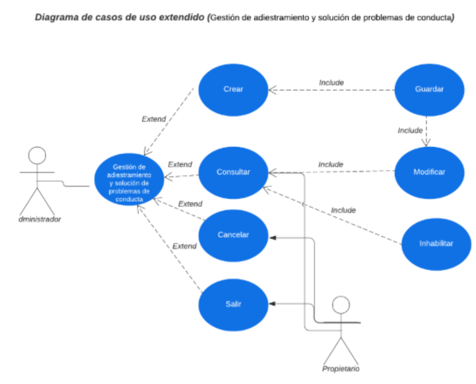
Diagrama de gestión de aplicación de la encuesta
El siguiente diagrama de casos de uso amplía las acciones correspondientes al proceso nombrado como "aplicación de la encuesta", desglosando las actividades específicas que los actores pueden realizar para gestionar los datos de "aplicación de la encuesta" en el sistema, especificando si las operaciones fundamentales que se agrupan bajo el concepto CRUD y sus prerrequisitos de ejecución.
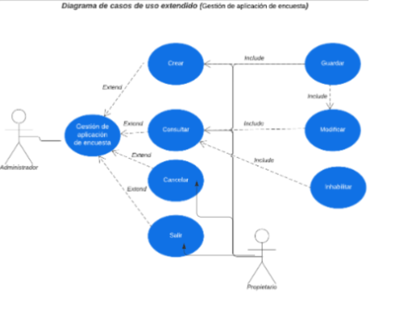
Gestión informes
El siguiente diagrama de casos de uso extendido amplia las acciones correspondientes a los informes interpretados como salidas y las acciones correspondientes a ellas junto con los actores que tienen acceso a ellas
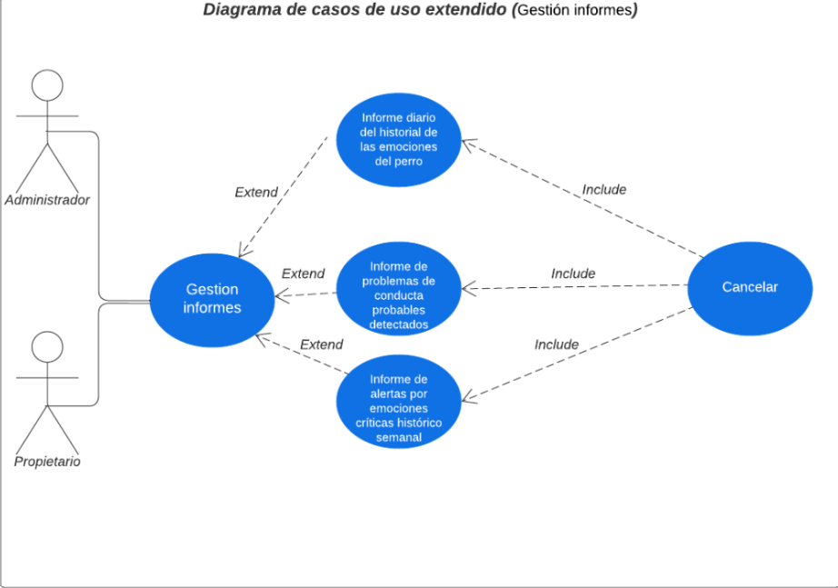
Gestión consultas
El siguiente diagrama de casos de uso extendido amplia las acciones correspondientes a las consultas interpretados como salidas y las acciones correspondientes a ellas junto con los actores que tienen acceso a ellas
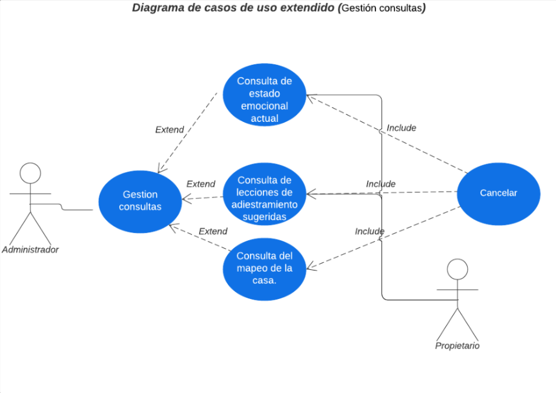
Gestion perfil
El siguiente diagrama de casos de uso amplía las acciones correspondientes a los perfiles del sistema desglosando las actividades específicas que el administrador puede realizar para gestionar los perfiles en el sistema, especificando si las operaciones fundamentales que se agrupan bajo el concepto CRUD y sus prerrequisitos de ejecución.
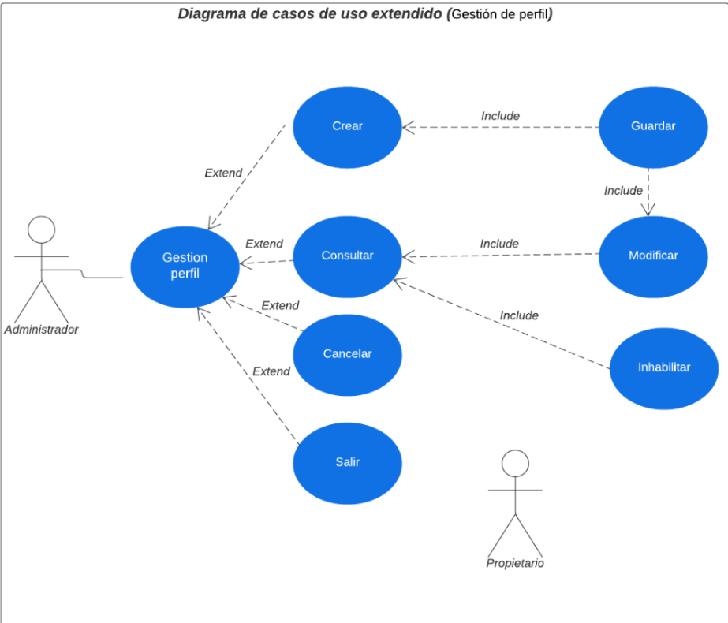
Gestión de usuario
El siguiente diagrama de casos de uso amplía las acciones correspondientes a los usuarios del sistema desglosando las actividades específicas que el administrador puede realizar para gestionar los usuarios en el sistema, especificando si las operaciones fundamentales que se agrupan bajo el concepto CRUD y sus prerrequisitos de ejecución.
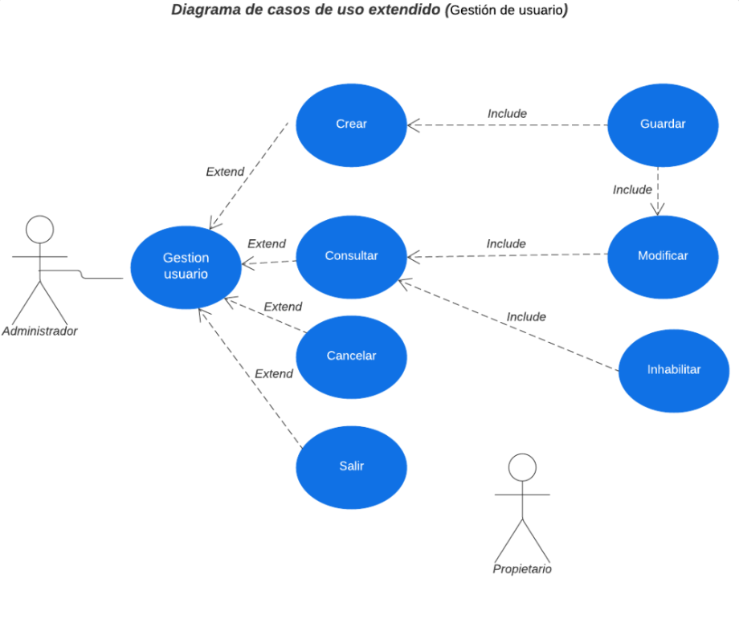